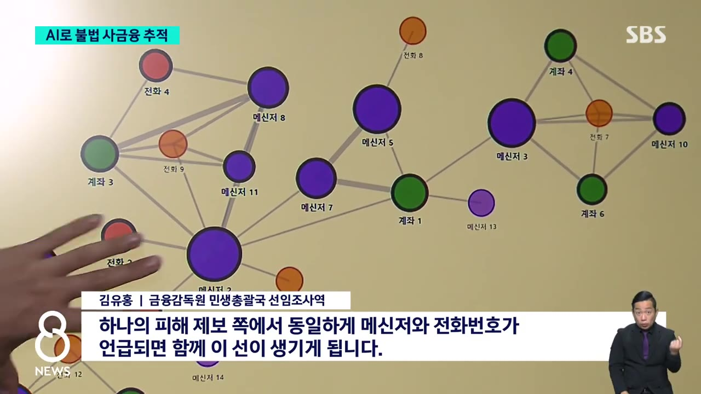
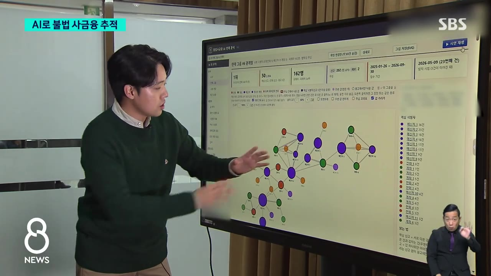
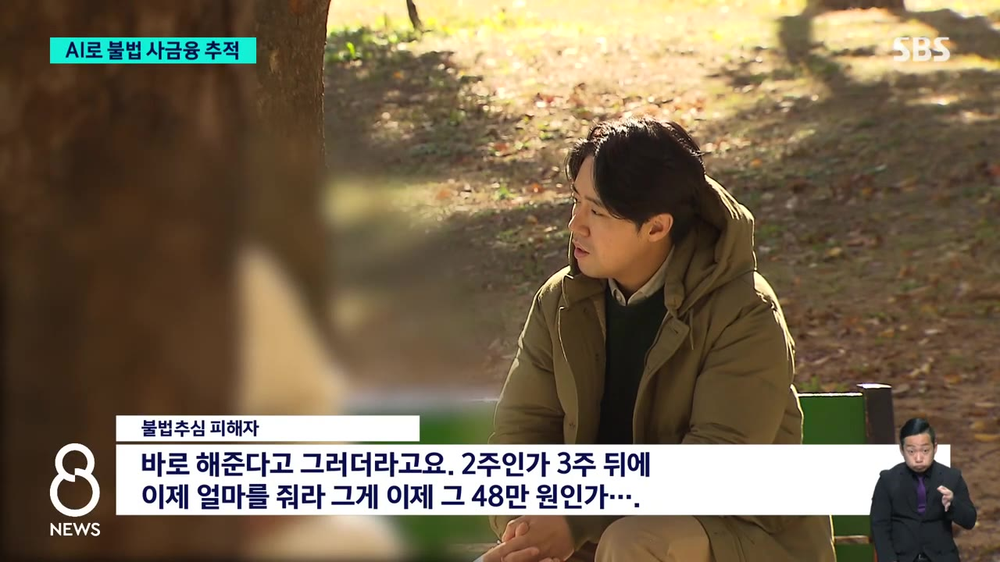

3,400개 불법 조직 줄줄이..'지도' 만든 AI / SBS 8뉴스
▶ 원본 영상 보기한눈에 보기
- 금융감독원이 불법 사금융 조직 사이의 연결 고리를 AI로 분석해 '조직 지도'를 만드는 수사 지원 시스템을 개발했다.
- 서로 다른 계정에서 같은 계좌번호·휴대전화 번호가 3번 이상 나오면 관련 조직으로 묶는 방식이며, 지금까지 3,400여 개 조직이 파악됐다.
- 한 피해자는 30만 원을 빌렸다가 하루 5만 원 연체료로 빚이 80만 원까지 불었고, 상환을 멈추자 가족에게 성적인 협박 문자가 갔다.
- 금감원은 법이 바뀌어 내년 1월부터 직접 수사가 가능해지면 이 시스템을 수사에 쓰고, 경찰 등 다른 수사기관에도 기법을 나눌 계획이다.
이런 분께 도움이 됩니다
- 대출 광고 문자를 자주 받거나, 급전이 필요해 소액 대출을 고민하는 분.
- 공공기관이 AI를 범죄 수사에 어떻게 쓰는지 궁금한 분.
핵심 내용
AI로 만든 불법 사금융 '조직 지도'
- 금융감독원이 불법 사금융 조직들을 인공지능으로 분석하는 수사 지원 시스템을 개발했다. (1:15)
- 분석 기준: 서로 다른 계정에서 범죄에 쓰인 계좌번호나 휴대전화 번호 같은 정보가 3번 이상 나오면 관련 있는 조직으로 보고 선으로 잇는다.
- 김유홍 금감원 민생총괄국 선임조사역: "하나의 피해 제보 쪽에서 동일하게 메신저와 전화번호가 언급되면 함께 이 선이 생기게 됩니다."

- 분석 결과 3,400여 개 조직이 파악됐다. (1:41)
🔁 피해 제보에서 조직까지 추적하는 과정
- 피해 접수 계정 확인
- 연결된 그룹 파악
- 큰 조직 확인
- 1피해 접수 계정 확인
피해자 A 씨에게 연락한 텔레그램 계정이 금감원에 접수된 내역을 출발점으로 삼는다.
- 2연결된 그룹 파악
내역을 타고 들어가면 같은 계좌·전화번호로 이어진 그룹들이 나타난다.
- 3큰 조직 확인
그룹을 자세히 보면 더 큰 조직의 일원이었던 것으로 드러난다.

여러 그룹이 이어진 큰 조직 연결망을 화면으로 설명하는 장면 · ▶ 1:50
💡 조직원 하나를 잡으면 고구마 줄기 캐듯 조직 전체와 다른 조직까지 추적할 수 있다.
피해 사례: 30만 원이 협박으로 번지기까지
- 40대 A 씨는 생활비가 모자라 평소라면 지웠을 대출 광고 메시지를 보고 직접 연락했다. (0:24)
🔁 A 씨의 불법 대출 피해 과정
- 광고 보고 대출
- 상환 요구
- 연체료 폭증
- 송금 중단
- 협박·괴롭힘
- 1광고 보고 대출
지난 7월, 대출 광고 메시지로 연락해 30만 원을 빌림. "바로 해준다"는 말을 들음.
- 2상환 요구
2~3주 뒤 48만 원(자막상 정확하지 않음)을 갚으라고 함.

피해자 인터뷰 자막 "2주인가 3주 뒤에 … 48만 원인가" · ▶ 0:32 - 3연체료 폭증
기한 내 못 갚자 하루 5만 원씩 연체료가 붙어 80만 원까지 불어남. 연체료가 원금보다 커짐.
- 4송금 중단
금감원에서 "불법이니 더 갚지 않아도 된다"는 조언을 듣고 송금을 멈춤. (0:51)
- 5협박·괴롭힘
아내 등 가족에게 성적인 문자가 감. 아들은 초등학교 1학년.
- 조직이 해외에 서버를 둔 텔레그램을 써서 경찰 신고도 소용이 없는 상태다.
💡 기존 수사가 막혔던 지점(해외 서버 메신저)을 계좌·전화번호 연결로 우회하려는 시도다.
앞으로의 활용 계획
- 법이 바뀌어 내년 1월부터 금감원이 직접 수사할 수 있게 되면 이 시스템을 적극 활용한다. (2:04)
- 경찰 등 다른 수사기관에도 분석 기법을 공유하겠다고 밝혔다.
기억할 숫자·인용
- 30만 원 → 80만 원: A 씨가 빌린 돈과 연체료로 불어난 빚 (연체료 하루 5만 원)
- 3번 이상: 같은 계좌·전화번호가 서로 다른 계정에서 나오면 관련 조직으로 보는 기준
- 3,400여 개: AI 분석으로 파악된 불법 사금융 조직 수
- 내년 1월: 금감원 직접 수사가 가능해지는 시점
- "조직원 하나를 잡으면 고구마 줄기를 캐듯 조직 전체와 다른 조직들도 추적이 가능해진다."
생각해볼 점
- (내 의견) '3번 이상 겹치면 같은 조직'이라는 기준은 단순 규칙에 가까워, 영상에서 어떤 부분이 'AI'인지는 구체적으로 나오지 않는다. 대포통장·도용 번호를 여러 조직이 돌려쓰는 경우 서로 다른 조직이 하나로 묶일 가능성도 있다.
- (내 의견) 조직을 '파악'한 것과 실제 검거·피해 구제는 별개다. 직접 수사가 시작되는 내년 1월 이후 실제 성과를 지켜볼 필요가 있다.
바로 해볼 일
- 출처 모를 대출 광고 메시지는 답하지 말고 지운다.
- 이미 불법 대출 피해를 입었다면 A 씨처럼 금융감독원에 상담·제보한다 — 제보가 쌓일수록 조직 지도가 정교해진다.
- 가족에게도 "광고 문자로 빌린 돈의 과도한 연체료는 불법일 수 있다"는 점을 알려 둔다.